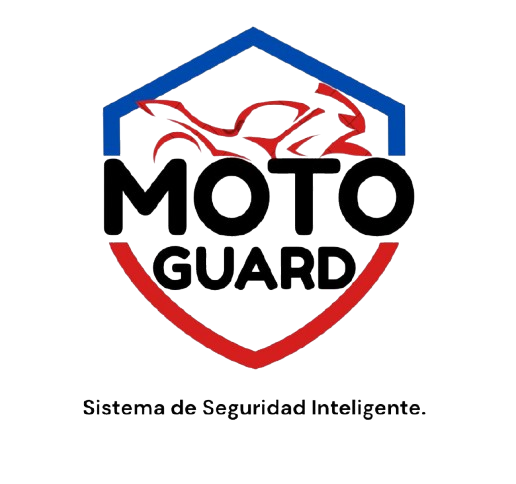

Sensor SW-420
Detección de vibraciones
Registra golpes o vibraciones y los reporta al ESP32 para generar una alerta cuando la protección está activada.
MotoGuard es un prototipo de seguridad para motocicletas que detecta vibraciones y movimientos, registra alertas y permite activar la protección a distancia desde el celular.

CÓMO FUNCIONA
El sistema combina hardware instalado en el prototipo y servicios en la nube para registrar actividad y mantener informado al usuario.
El ESP32 se conecta a una red Wi-Fi con acceso a internet y envía lecturas del prototipo.
Desde la aplicación podés activar o desactivar la vigilancia del dispositivo vinculado.
El SW-420 registra vibraciones y el MPU6050 identifica movimientos. Cada uno puede activar una alerta.
Render actualiza Firebase y la aplicación muestra el estado y el historial de eventos.
HARDWARE + SOFTWARE
Un conjunto de módulos electrónicos conectados a un mismo sistema. Cada elemento tiene una función específica.
Detección de vibraciones
Registra golpes o vibraciones y los reporta al ESP32 para generar una alerta cuando la protección está activada.
Detección de movimiento
El acelerómetro mide cambios de movimiento y permite activar una alerta aun cuando no se detecte vibración.
Controlador principal
Recopila las lecturas y las transmite mediante Wi-Fi y HTTPS a una API Node.js alojada en Render.
Ubicación satelital
Está integrado al prototipo y pendiente de obtener una posición válida en las pruebas de exterior.
Verificación por peso
Etapa proyectada para reconocer si el peso sobre el asiento coincide con un rango autorizado.
Acceso fuera de Wi-Fi
Se está evaluando el SIM800L para mantener la comunicación cuando la moto no tenga acceso a una red Wi-Fi.
ARQUITECTURA
MotoGuard separa la electrónica, el servidor y la aplicación para facilitar el mantenimiento y permitir el acceso remoto por internet.
ESP32Lee los sensores y envía datos mediante HTTPS.
Render + Node.jsValida la clave del dispositivo y procesa las alertas.
FirebaseGestiona usuarios, estados y registros en tiempo real.
React NativePermite consultar y cambiar la protección en el celular.
APP MÓVIL
Desde MotoGuard podés iniciar sesión, vincular tu dispositivo, activar o desactivar la protección y consultar el historial de alertas. La app Android ya tiene una compilación APK de prueba.
DESCARGAS
Probá la aplicación independiente en Android. Para iPhone seguimos utilizando Expo Go durante el desarrollo.
Versión 1.1.0 · Compilada con Expo EAS. No requiere Expo Go una vez instalada.
Descargar APK de MotoGuardDescarga oficial desde GitHub Releases. Versión de prueba del prototipo: comprobá las funciones disponibles antes de utilizarlo.
La versión iOS se prueba actualmente mediante Expo Go. Todavía no existe una descarga independiente para iPhone.
La distribución futura requerirá TestFlight o App Store; un archivo APK no funciona en iOS.
Nota de instalación: descargá el APK solamente de enlaces oficiales del proyecto. En Android puede ser necesario autorizar temporalmente la instalación desde el navegador o administrador de archivos.
PREGUNTAS FRECUENTES
Sí. El backend está publicado en Render y la app utiliza Firebase. El ESP32 necesita alimentación y conexión a internet para enviar información.
La versión actual del prototipo requiere Wi-Fi para enviar datos. La conectividad celular todavía está en desarrollo.
La comunicación con el módulo GPS está integrada, pero todavía debemos completar las pruebas de recepción satelital y ubicación válida.
La aplicación se prueba en iPhone mediante Expo Go. La versión independiente para iOS todavía no está publicada.
No. Es un prototipo en desarrollo y evaluación. No reemplaza un dispositivo de seguridad automotriz certificado ni garantiza impedir un robo.
CONTACTO
Si tenés preguntas sobre MotoGuard, el prototipo o su desarrollo, escribinos.